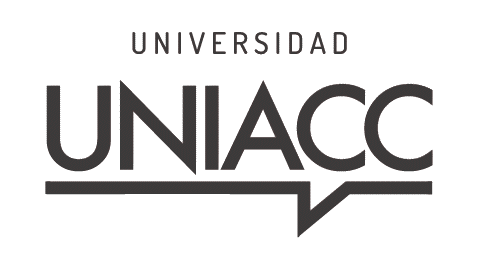
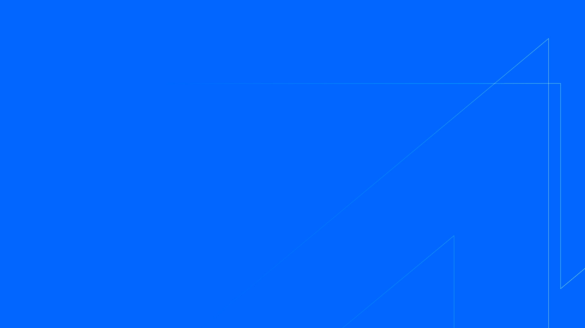
Transformamos asignaturas y programas de posgrado en experiencias de aprendizaje inmersivas. Integramos metodologías ágiles, diseño centrado en el estudiante y estándares internacionales (OLC) para potenciar el éxito académico.
Selección de proyectos de innovación académica, repositorios digitales, aulas virtuales Moodle y producción multimedia desarrolladas para UNIACC y asociados.
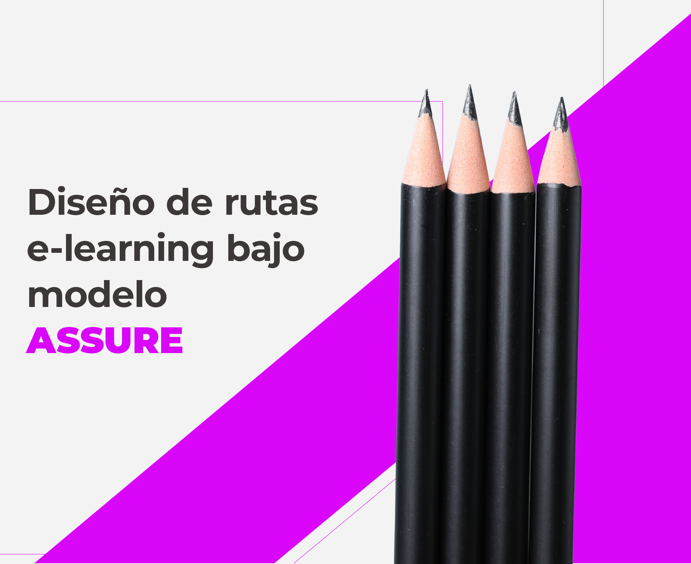
Diseño tecnopedagógico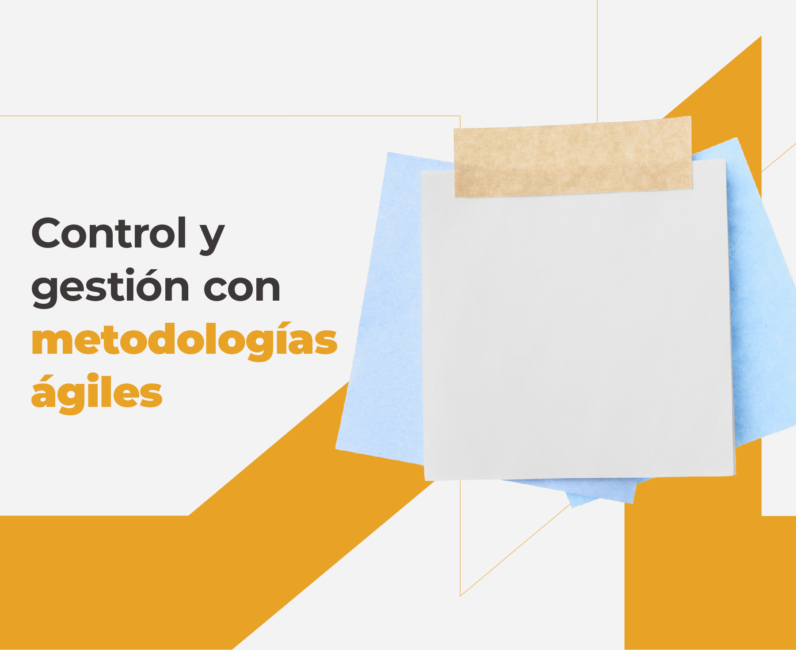
Scrum / Kanban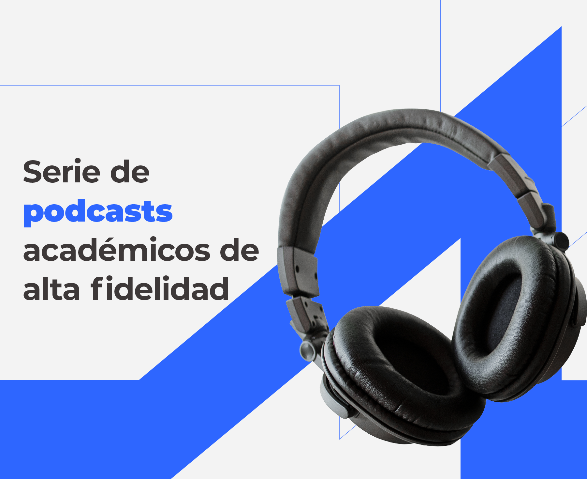
Audio / streaming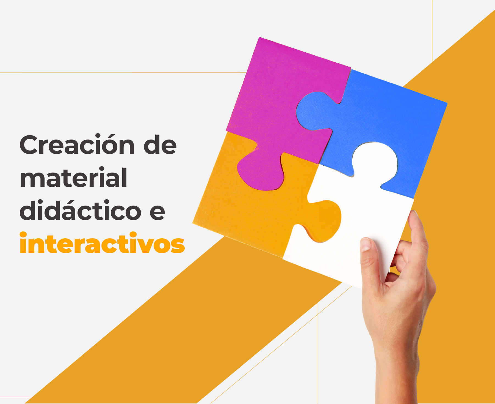
Producción / Genially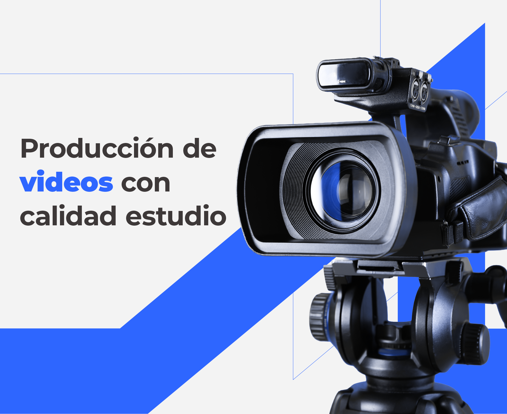
Audiovisual / animación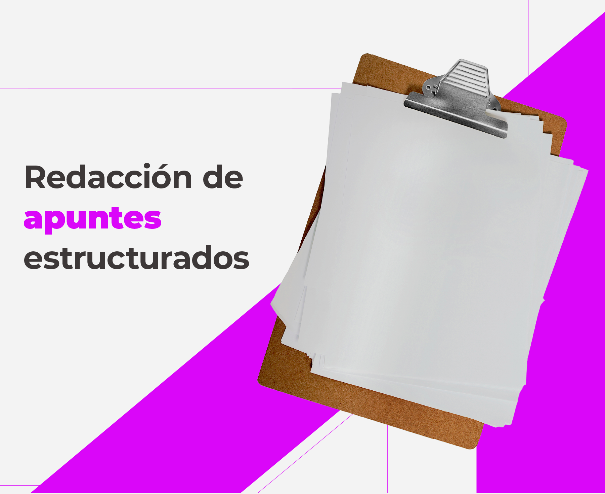
Diseño editorial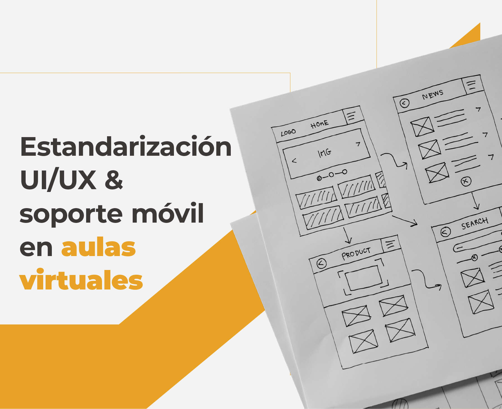
Ecosistema digital / Accesibilidad UX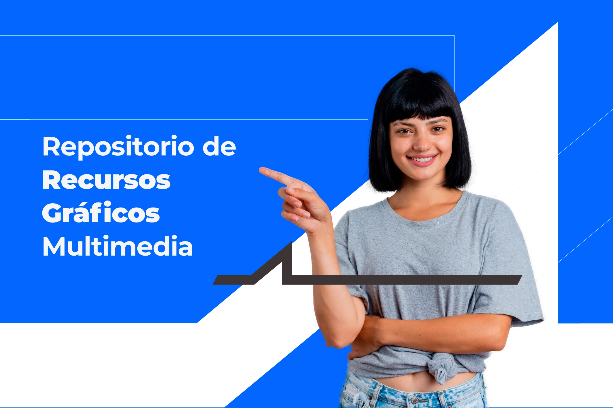
Repositorio gráficoExplora los pilares de la Dirección de ambientes virtuales de aprendizaje (DADVA) y su enfoque de aseguramiento de la calidad formativa.
La Dirección de ambientes virtuales de aprendizaje tiene como misión liderar el diseño, desarrollo y mejora continua de experiencias formativas en modalidades online y semipresencial.
Desde un enfoque centrado en el estudiantado, la DADVA impulsa la implementación del modelo educativo institucional integrando metodologías activas, accesibilidad e inclusión, estándares internacionales de calidad en e-learning (OLC) y herramientas digitales.
Garantizar la aplicación planificada y estratégica del diseño tecnológico y pedagógico en la construcción de aulas y experiencias dentro del ambiente virtual de aprendizaje (e-campus).
Trabajamos bajo estándares de calidad e-learning, el correcto alineamiento curricular y la innovación en los recursos, evaluaciones y herramientas de retroalimentación, contribuyendo a una formación coherente con los perfiles de egreso.
Como equipo nos vemos enfrentados a muchos hitos y sucesos estratégicos de alta relevancia institucional, requiriendo articulación y rapidez de respuesta.
Es primordial que podamos organizar nuestro trabajo de manera planificada y colaborativa, disponiendo de flujos ágiles para apoyar a quienes lideran las iniciativas de innovación docente, facultades y áreas de gestión académica.
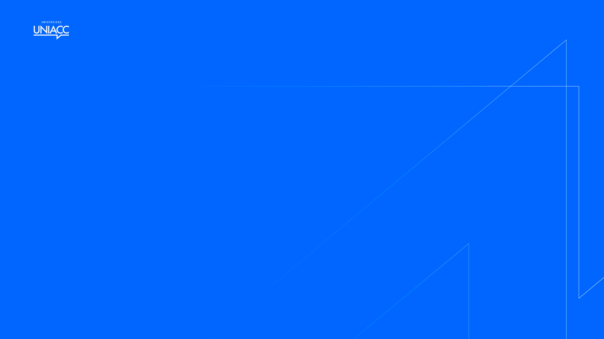
Evaluamos el perfil del estudiante, las competencias declaradas y los requerimientos tecnológicos para sentar bases estratégicas sólidas que aseguren la viabilidad del proyecto.
Orquestamos rutas de aprendizaje bajo el modelo ASSURE, garantizando el alineamiento constructivo entre resultados esperados, microactividades y rúbricas de evaluación.
Nuestra factoría cobra vida. Producimos objetos virtuales interactivos, series de podcast, cápsulas audiovisuales con calidad de estudio y material editorial accesible.
Desplegamos el ecosistema digital completo en Moodle, aplicando rigurosos controles de calidad, criterios de accesibilidad (WCA) y optimización móvil (UX/UI).
Cursos desarrollados
Estudiantes impactados en promedio
Trabajo promedio por asignatura
Profesionales en el equipo